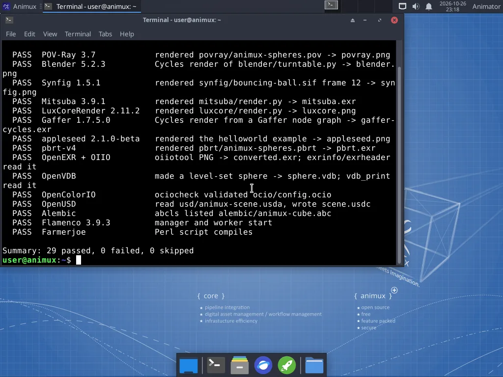

Animux Tools → Animux Self-Test renders a small scene with every renderer, opens the most important file formats and checks that the main programs start. It takes 2–10 minutes.


Reading the results#
| Result | Means | Do |
|---|---|---|
| PASS | the program ran and produced a correct result | nothing |
| FAIL | the program is installed but did not work | open the log file named in the line (see below) |
| SKIP | not installed, or this processor is too old for it | "this processor has no SSE4.2/AVX": see Requirements |
All pictures, files and logs are kept in ~/animux-selftest/<date-time>/; the menu entry opens that folder at the end. summary.txt there has the result list. Attach that folder when you ask for help.
The tests#
| Test name | Program | What it checks |
|---|---|---|
blender |
Blender | Cycles renders a small scene |
apps |
MakeHuman II | the program and its Qt libraries load |
povray |
POV-Ray | renders samples/povray/animux-spheres.pov |
appleseed |
appleseed | renders the bundled helloworld project |
luxcore |
LuxCoreRender | renders samples/luxcore/render.py |
mitsuba |
Mitsuba 3 | renders samples/mitsuba/render.py |
pbrt |
pbrt-v4 | renders samples/pbrt/animux-spheres.pbrt |
gaffer |
Gaffer | Cycles render from a Gaffer node graph |
usd |
OpenUSD tools (usdview, usdcat …) | reads samples/usd/animux-scene.usda, writes .usdc |
alembic |
Alembic tools (abcls, abctree …) | lists samples/alembic/animux-cube.abc |
exr |
OpenEXR and OpenImageIO tools | converts PNG to EXR and reads the header |
ocio |
OpenColorIO tools | validates samples/ocio/config.ocio |
vdb |
OpenVDB tools | makes a level-set sphere and reads it back |
flamenco |
Flamenco | manager and worker start |
farmerjoe |
Farmerjoe | the Perl script compiles |
opentoonz |
OpenToonz | renders samples/opentoonz/animux-lines with tcomposer |
synfig |
Synfig Studio | renders frame 12 of samples/synfig/bouncing-ball.sif |
apps |
DJV | the program starts |
The apps test also checks that MakeHuman 2, DJV, Avidemux and Cinelerra-GG start.
From the terminal#
animux-selftest # everything
animux-selftest --list # list the test names
animux-selftest blender povray # only these
animux-selftest --open # open the results folder at the end
The exit code is 0 when nothing failed, 1 otherwise, so scripts and AI agents can use it as a health check.
Sample scenes#
Animux Tools → Animux Sample Scenes opens /usr/share/animux/samples:
| Folder | File | Open or run with |
|---|---|---|
povray/ |
animux-spheres.pov |
menu Renderers → POV-Ray, or povray +Ianimux-spheres.pov +O/tmp/out.png +W800 +H600 |
blender/ |
turntable.py |
blender -b -P turntable.py -- /tmp/out.png |
synfig/ |
bouncing-ball.sif |
Synfig Studio (File → Open), or synfig bouncing-ball.sif -t gif -o /tmp/ball.gif |
mitsuba/ |
render.py |
animux-vfx-python render.py /tmp/out.exr |
luxcore/ |
render.py |
animux-vfx-python render.py /tmp/out.png |
gaffer/ |
render.py |
gaffer env python render.py /tmp/out.exr |
pbrt/ |
animux-spheres.pbrt |
pbrt --outfile /tmp/out.exr animux-spheres.pbrt |
usd/ |
animux-scene.usda |
usdview animux-scene.usda |
alembic/ |
animux-cube.abc |
Blender: File → Import → Alembic; abcls -r animux-cube.abc |
ocio/ |
config.ocio |
ociocheck --iconfig config.ocio |
The sample files are read-only. Copy one to your Home folder before changing it: cp -r /usr/share/animux/samples ~/samples.
More examples: /usr/share/povray-3.7/scenes (hundreds of POV-Ray scenes), /opt/animux/gaffer/resources (Gaffer), /opt/animux/appleseed/examples (appleseed), and the tutorial files on this guide: first-render.blend, turntable.blend.